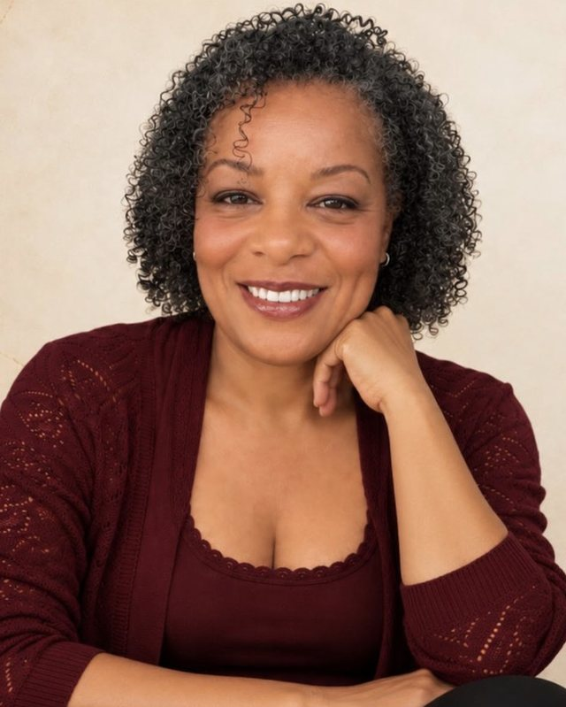

Dez encontros individuais para atravessar uma transição concreta, com método e com o seu Mapa da Coragem em mãos.
Quero saber mais Online · ao vivo · individualPara a mulher que sabe onde está e para onde quer ir, e tem uma situação concreta pedindo decisão: uma mudança de carreira, de país, de relação, o fim de um ciclo, um reposicionamento profissional.
O público do método reúne mulheres entre 38 e 60 anos ou mais, em transição, que querem atravessar essa etapa com informação sobre si mesmas e com um próximo passo possível.
Você sai dos encontros com o método na mão e com autonomia para continuar sozinha.
C.O.R.A.G.E.M. nomeia sete dimensões do processo. Você entra pela que está mais viva agora, trabalha esse território e segue para as outras quando fizer sentido. O movimento acontece em espiral, e cada volta traz mais informação.
O protocolo define o que precisa acontecer em cada dimensão. O caminho até lá se adapta a você e à sua situação.
Escrita reflexiva, atenção plena e neurociência aplicada formam a assinatura do trabalho. Eles organizam cada encontro e continuam disponíveis para você depois que o acompanhamento termina.
O método tem como base a pós-graduação em Neurociência, Psicologia Positiva e Mindfulness (PUC-PR) e as referências de Damásio, Kabat-Zinn, Pennebaker e Seligman.

Escritora, pesquisadora e criadora do Coragem Lab, marca da Escola da Coragem. Tem pós-graduação em Neurociência, Psicologia Positiva e Mindfulness pela PUC-PR e formação como instrutora de meditação na Índia. Atende online, do sul da Espanha, mulheres de vários países.
Não. O C.O.R.A.G.E.M. 2.0 é um trabalho de desenvolvimento pessoal e orientação. Se você faz terapia ou acompanhamento médico, ele convive bem com eles.
Sim. O Mapa é a entrada de todos os caminhos. Com o resultado em mãos, a Sessão de Alinhamento fica muito mais precisa.
São dez encontros individuais, online e ao vivo. O ritmo e a ordem das dimensões se ajustam à sua situação.
Os valores ficam no catálogo do WhatsApp Business, com a versão equivalente para quem mora no Brasil. Fale comigo pelo botão abaixo.
Pode. Os encontros acontecem online e combinamos o horário entre os nossos fusos.
Envie uma mensagem pelo WhatsApp. Eu respondo pessoalmente e indico o próximo passo.
Falar pelo WhatsApp